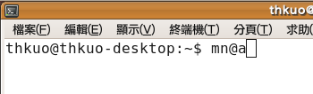
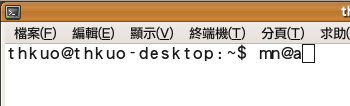
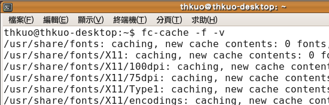
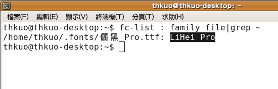
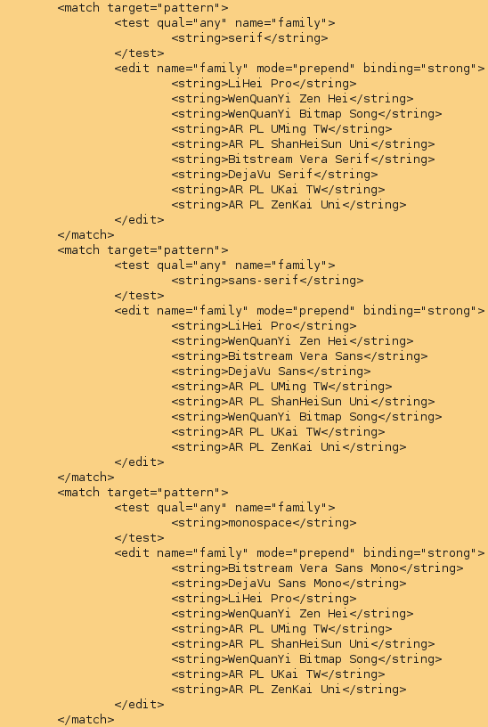

也紀念我們永遠的朋友 李士傑先生（Shih-Chieh Ilya Li）。
如何將 Ubuntu 字型美化
◎ 前言
相信多數用過 Mac OS 的人，都會被其精緻可愛的儷黑體字型所吸引，而在 Ubuntu 下該如何將系統字型換得相似的效果或是置換成自己想要的字型呢？筆者將自己置換字型的步驟與心得跟各位讀者分享，內容包含瀏覽器、系統視窗與終端機介面下如何置換系統字型，希望可以帶給讀者煥然一新的視窗介面。
圖一 Ubuntu 預設中文環境字型
◎ 概念講解
為了讓讀者置換字型的同時可以順便吸收一些系統字型處理的概念，因此分兩個小項介紹這次會遇到的一些問題。
．等寬字型
一般來說，等寬字型下，中文為英文字母的兩倍寬度，非等寬字型下中文亦是如此；非等寬字型下，英文字母寬度便不一定是中文字的一半，w (小寫W)會特別寬，而 l (小寫L)特別的窄。但有時候文章排版為求美觀，會使用非等寬字型，而終端機為了對齊則採用等寬字型，圖二與圖三為等寬字型與非等寬字型的差異，明顯的非等寬字型下，終端機視窗會有部份字母過度貼近的問題，如圖中的 『m n』即是明顯的例子。

圖二 等寬字型

圖三 非等寬字型
．字型缺碼
由於多國語系下中日韓文字相當多，一套字型有時無法涵蓋所有文字，因此系統提供了字型的優先順序，遇到該字型無法顯示的字碼，即可從第二優先的字型來提供，解決了字型缺碼的問題。
◎ 準備工作
目前網路上可以取得的免費字型有很多，例如：讀者可以下載最近熱門的 Android 手機專案所用的 Droid Fonts 進行使用；如果讀者擁有合法的 Windows & Mac 授權，也可下載微軟官方網站釋出的微軟正黑體、微軟雅黑體等，或者 Mac OS 電腦上的儷黑體進行實驗。
◎ 開始置換
由於筆者手邊恰巧有一台 MacOS X，因此筆者便從這台電腦上取得檔名為"儷黑_Pro.ttf" 的字體進行實驗。
．第一步：
# 將檔案放置於家目錄下的 .fonts 目錄下
mkdir ~/.fonts
cp 儷黑_Pro.ttf ~/.fonts/
．第二步：
# 更新字型清單快取
fc-cache -f -v

圖四 更新字型清單過程
．第三步：
# 取得字型 family name：LiHei Pro
fc-list : family file|grep ~

圖五 取得字型 family name：LiHei Pro
．第四步：
# 複製字型設定檔
cd /etc/fonts/conf.d
sudo ln -s ../conf.avail/69-language-selector-zh-tw.conf
．第五步：
# 編輯字型設定檔
sudo gedit 69-language-selector-zh-tw.conf
這個文字檔裡分為三個區塊，serif、sans-serif、monospace，其中 monospace 為等寬字，勿隨意更動。為了使得系統優先使用儷黑體 (填入 family name 為"LiHei Pro")與文泉驛正黑，因此更動順序如下：
«string»LiHei Pro«/string»
«string»WenQuanYi Zen Hei«/string»
«string»WenQuanYi Bitmap Song«/string»
«string»AR PL UMing TW«/string»
«string»AR PL ShanHeiSun Uni«/string»
«string»Bitstream Vera Serif«/string»
«string»DejaVu Serif«/string»
«string»AR PL UKai TW«/string»
«string»AR PL ZenKai Uni«/string»

圖六 修改後設定檔參考
．第六步：
重新登入或直接利用 Ctrl+Alt+Backspace 重開 X-Window 後字型立即生效。
圖七 置換字型後效果
◎ 結語
相信經由上述步驟後，讀者已能自己動手修改喜好的字型設定了，不過值得一提的是，如果要測試字型是否正確無誤，可以依據幾個項目來進行最後測試：
．測試繁體中文、簡體中文與日文等多國語系網頁
．測試中文 Flash 是否正確顯示，例如 Youtube、Pixnet 等網站。
．測試終端機視窗字型是否正確顯示中英文
．測試 Ubuntu 套件更新時，字型是否正確顯示。
如果通過以上測試，相信您的系統已經是最佳的字型顯示狀態了。最後為了尊重智慧財產權，還是提醒一下，任何使用字型必須取得合法授權呦！如有任何問題，歡迎讀者再來信與筆者聯絡。
專欄總覽


E-Mail：contact@openfoundry.org Address：台北市南港區研究院路2段128號 中央研究院資訊科學研究所 . 隱私權條款. 使用條款

評論
請問我的 Ubuntu 環境預設是英文，
那我想修改預設字型順序的話，
是否不是改 69-language-selector-zh-tw.conf 這個檔了？
我該改哪個檔呢？
我只是希望 X window 底下的 Terminal 視窗裡，
英文可以使用 Consola 這個字型顯示，
中文可以使用 LiHei Pro 這個字型顯示。